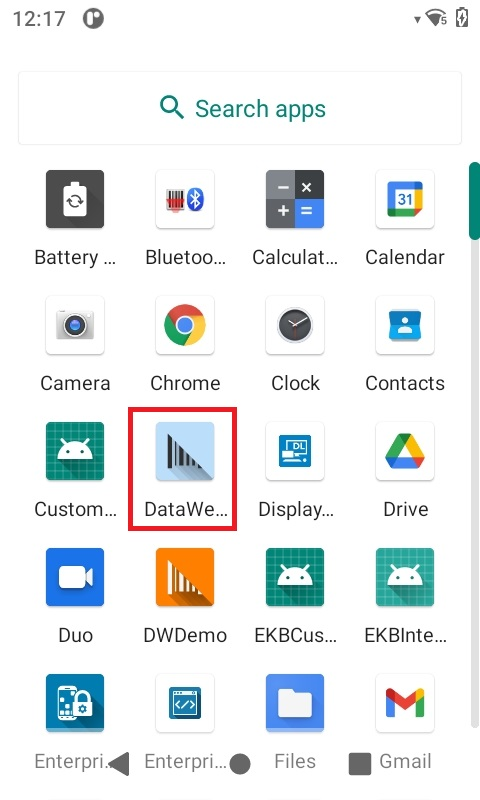
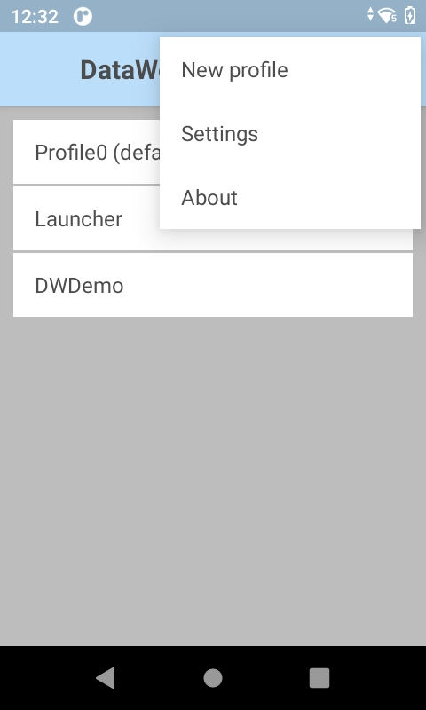

Overview
Zebra DataWedge provides the capability for any application on the device to acquire data from various input sources (such as barcode scanner, MSR, RFID, voice, and serial port) and manipulate the data as needed based on simple options or complex rules. Available out-of-the-box with every Zebra Android device, DataWedge can easily be configured to automatically provide data capture services within any particular app; to use a particular scanner, reader or other peripheral device; and to properly format and transmit data to the right app.
There are 2 approaches to capture data:
- No-code - eliminates the need for any programming or app modification by capturing and processing data with the use of DataWedge profiles configured from the user interface.
- Application development - develop data capture apps based on one of the following approaches:
- Minimal code - basic method to retrieve data from intents (commonly used with general Android programming) with the use of a broadcast receiver without the need for finer control of scanning activity or data processing. Refer to basic intent sample app.
- DataWedge APIs - programmatically control, modify and query the DataWedge configuration settings and operations through Android intents without concern of the underlying hardware.
See the Get Started guide, which discusses both approaches, common use cases, and DataWedge features and functionality.
See the Programmer's guide on for guidance on use of the DataWedge intent APIs and best practices.
See Usage Notes and Behavior for information on DataWedge use and behavior.
The appearance of sample app screens displayed throughout this guide can vary by DataWedge version, Android version, and screen size.
Important Information
NextGen SimulScan
NextGen SimulScan consists of major SimulScan capabilities migrated to the internal scanning framework accessible through DataWedge and DataWedge intent APIs. These capabilities are supported on certain Bluetooth scanners and all Zebra devices with built-in imager and/or camera running Android 8.x Oreo and higher. For Zebra Professional-series devices, such as TC21 and TC26, NextGen SimulScan requires a Mobility DNA Enterprise license. NextGen SimulScan features (formerly part of SimulScan) are:
- MultiBarcode - acquire multiple, unique barcodes in a single scan session and deliver scanned data either immediately or after the specified number of barcodes per scan is reached. Options currently available:
- Number of barcodes per scan - set a fixed quantity of barcodes to scan.
- Instant Reporting - instantaneously report unique barcodes within a scanning session. (Must not be confused with DataWedge Reporting that is deprecated.)
- Report decoded barcodes - report decoded barcodes in a single scan session.
- Document Capture - scan a document based on a Document Capture/NextGen SimulScan template. Contact your local Zebra sales representative for assistance to create a Document Capture/NextGen SimulScan template.
See Simulscan Migration Alert for more information.
Voice Input Options Deprecated
The following Voice Input features are deprecated and discontinued in Android 13 and later:
- Data capture start option - Start phrase
- Data capture start phrase
- Data capture end phrase
As an alternative, Zebra recommends using the PTT button to trigger voice capture.
Reporting Deprecated
DataWedge Reporting (not to be confused with Instant Reporting from MultiBarcode) is deprecated and discontinued in Android 13 and later. As an alternative, Zebra recommends using the following DataWedge intent APIs to identify the supported scanners and parameters:
- Enumerate Scanners - generates an index of scanners available on the device.
- Get Config - retrieves the
PARAM_LISTsettings, or the supported parameters, from the specified Profile; returned as a set of value pairs or a Plug-in config bundle. See Get Barcode Parameters for sample code.
Supported Devices
Supported external scanners and imagers:
- DS2278
- DS3608
- DS3678
- DS8178
- LI3608
- LI3678
- RS507
- RS4000
- RS5000
- RS5100
- RS6000
Language Support
DataWedge has been approved to run on device operating systems localized for the following languages:
- English
- French
- German
- Italian
- Spanish
- Simplified Chinese
- Traditional Chinese
- Japanese
For more information about approved languages or to download a localized operating system, please contact Zebra Technical Support.
New in DataWedge 11.0
- Renamed the Auto Group Identification option (part of Document Capture with MultiBarcode) from Group of Common barcodes dynamic quantity to User-defined Barcode Quantity.
- New Decoders section listing supported decoders and decoder parameters.
- Android 11 scoped storage enforcement requires a deployment configuration change.
- Added support for RFID Readers with USB CDC connectivity, such as RFD40.
Version History
Added in DataWedge 8.2
- Multiple scanner support added for different scanners to be used interchangeably without the need for manual configuration.
- New DataWedge intent APIs:
- Notify - play notification sound(s) on connected Bluetooth scanners with RSM (Remote Scanner Management).
- Enumerate Triggers - retrieve supported trigger list of a device.
- New Document Capture features:
- Detect the presence of a handwritten signature with signature presence detection. To programmatically read the signature presence flag, see Content Provider Programmer's Guide.
- Capture the entire document as an image with whole document capture
- Document Capture via Camera scanner for better quality images. Support for this feature depends on the hardware and operating system version. Refer to the Feature Matrix table for more information.
- New DataWedge keyboard options in Keystroke Output to display a DataWedge "keyboard" (DataWedge icon that displaces the default keyboard) when dispatching keystroke data.
- Use of unlicensed features is reported when importing configurations.
- Updated the Signature Capture sample app to use Content Provider to deliver the captured image of Decoder Signature instead of using internal storage.
Added in DataWedge 8.1
- Control access to DataWedge Intent APIs to prevent unauthorized use of the APIs.
- New Trigger Wakeup and Scan Reader Parameter to trigger scanning when device is in a suspended/screen-off state. New corresponding SetConfig API parameter.
- Updated licensing screen.
- For DataWedge 8.1.45:
- New Scanning Modes option available in the Configure Scanner Settings section of Barcode Input.
- Renamed SimulScan to Document Capture.
- Renamed Basic MultiBarcode to MultiBarcode.
- Renamed Document Capture Template to Document Selection in UI.
Added in DataWedge 8.0
- Support for Unique Device Identification (UDI) barcodes has been restored to Zebra devices running Android 10 with BSP 10.12.13 "Update 17" (or later).
- New secure Intent Output with Component Information and new corresponding SetConfig API parameter.
- New option to use DataWedge content provider in Intent Output to scan large data, such as images, with new corresponding SetConfig API parameter and Use Content Provider Programmer's Guide.
- New NextGen SimulScan Configuration replacing legacy SimulScan features, license required for Zebra Professional-series devices.
- Import NextGen SimulScan Templates for document capture.
- New Press and Continue Aim Type for Barcode Input and corresponding new SetConfig API parameter.
- New Inventory State and Hardware Key RFID input options.
Added in DataWedge 7.6
- Added Dutch Postal 3S and Finnish Postal 4S decoder support.
- Set Finnish Postal 4S and Dutch Postal 3S with SetConfig API.
- New Report Decoded Barcodes option for MultiBarcode decoding.
- RFID input is disabled in Profile0, DataWedge's default generic profile. Previously it was enabled by default.
- Improved look and feel of user interface. Refer to Settings and DWDemo.
- Image Capture Mode option from Reader Params is removed due to changes in the scanner framework.
- Support for SimulScan API is deprecated - SimulScan support will be removed from DataWedge beginning with Android 10 device support.
Added in DataWedge 7.5
- Increased supported data size and maximum number of supported barcodes for MultiBarcode.
- New RFID Input parameters that include Link Profile, Dynamic Power, Pre filters, and Post filters.
- Added support for OCR A, OCR B, MICR E13B and US Currency decoders and corresponding OCR parameters for optical character recognition decoding.
- New secure Remote Administration using CSP (Configuration Service Provider) for mass deployment.
- New Presentation Mode parameters to adjust sensitivity levels.
- New voice commands to navigate within the foreground app or issue specific key presses: TAB, ENTER, NEXT, PREVIOUS, ESC, CLEAR.
- Deprecated "voice_enter_command" (replaced by "voice_command_enter_enabled") and "voice_tab_command" (replaced by "voice_command_tab_enabled") voice input parameters.
Added in DataWedge 7.4
- New Enterprise Keyboard Configuration feature introduced in DataWedge 7.4.44.
- DataWedge 7.5 and later versions only support Android Oreo (v8.0) and later.
- Introduced voice capture activation by PTT (push-to-talk) button with new Data capture start option.
- Added new DPM support for barcode reader and SetConfig API.
- Enterprise Keyboard option visible in the DataWedge profile screen is an upcoming feature for future use.
Added in DataWedge 7.3
- Added support for new Grid Matrix decoder.
- Set Grid Matrix decoder parameters with SetConfig API.
- New Decoder Signature feature added to capture a special formatted area (e.g. signature) as an image.
- New Signature Capture sample app.
- New Key Event Options added for Keystroke output.
- Keystroke output parameters can be toggled by using SetConfig API.
- Rear camera support added for Digimarc decoding.
- DS8178 Bluetooth Scanner now supported.
- New Febraban decoder parameter supported for I2of5.
- New Instant Reporting parameter for MultiBarcode scanning mode.
- New SimulScan option to deliver images as files.
- New in DataWedge 7.3.22: New RFID Input plugin feature to read RFID tags.
Added in DataWedge 7.2
- New Decode Screen Notification parameters added for deocde screen time and translucency level.
- Added new DotCode decoder support.
Added in DataWedge 7.1
- New Decode Screen Notification support added for decode feedback in Scan Params.
- Voice Input for voice-to-data capture officially released (non-beta).
- New End Detection Timeout option for Voice Input.
- New Multi-User Support for multiple Android user profiles.
- New SEND_RESULT result code for multiple plugins.
- New Hardware Trigger feature to toggle the hardware trigger for barcode input and Simulscan input.
- New Simulscan Trigger Mode to programmatically toggle hardware trigger in simulscan input
- New SET_CONFIG/GET_CONFIG parameters for:
- Data Capture Plus (DCP)
- Simulscan
- Magnetic Stripe Reader (MSR)
- IP Output
- Multiple modules (full profile) using a single intent
- New Tokens for UDI data output
- Barcode Trigger Mode to toggle the hardware trigger mode for barcode inputs
Added in DataWedge 7.0
New updates are identical to DataWedge 6.9.
- New Voice Input (beta) for voice-to-data capture.
- New Global Scanner Configuration enables a generic scanner configuration to apply to all supported scanners.
- New Character Set Configuration provides options to make adjustments with the decoder character set for barcode input.
- Updated Decoder Selection now supports:
- GS1 Datamatrix
- GS1 QRCode
- Added support for DS2278 Bluetooth Scanner.
Other Changes
- Improved layout for SET_CONFIG API scanner input parameters.
Added in DataWedge 6.9
- New Voice Input (beta) for voice-to-data capture.
- New Global Scanner Configuration enables a generic scanner configuration to apply to all supported scanners.
- New Character Set Configuration provides options to make adjustments with the decoder character set for barcode input.
- Updated Decoder Selection now supports:
- GS1 Datamatrix
- GS1 QRCode
- Added support for DS2278 Bluetooth Scanner.
Other Changes
- Improved layout for SET_CONFIG API scanner input parameters.
Added in 6.8
- Scanner auto-switching behavior is now controllable after connecting and disconnecting external scanners
- DataWedge Settings allows disabled Profiles to be ignored to help maintain full functionality at all times
- New SET_IGNORE_DISABLED_PROFILES API configures DataWedge to avoid switching to Profiles are are not enabled.
- New GET_IGNORE_DISABLED_PROFILES API returns the status of the IGNORE_DISABLED_PROFILES flag.
- Updated SET_CONFIG API now supports:
- Advanced Data Formatting
- Digimarc decoding
- New SWITCH_SIMULSCAN_PARAMS API enables runtime changes to SimulScan parameters
- Automatic Profile importing is enhanced to improve reliability and reduce extra coding
Other changes
The SimulScan Input Plug-in default template is now "Default - Barcode4.xml"
Added in v6.7
This version supports devices running Android Lollipop and higher only.
Supports multi-barcode input for simultaneous acquisition of more than one barcode at a time.
Enhanced inter-character delay function allows a delay to be specified for all characters or for multi-byte characters only.
AimType now supports Press and Sustain function continues a decode session until the Beam Timer is expired, barcode is decoded or the read is canceled.
A Dynamic Templates parameter allows the number of barcodes to be specified (from 1-99) for decoding on a form when using SimulScan Dynamic Templates.
A new IMPORT_CONFIG API allows Config and Profile settings files to be imported using an intent.
Added in v6.6
New serial input options allow DataWedge to specify communications parameters for a scanner or other device connected to a serial port and used to acquire data.
Import Reporting displays the results of imported databases and Profiles, allowing administrators to easily identify source/destination differences and make adjustments to compensate.
A new SET_REPORTING_OPTIONS API provides control of Reporting features with intents.
The SET_CONFIG API now configures multiple plug-ins with a single intent action.
The SWITCH_SCANNER API now supports friendly device names with a new extra.
Which Version is Installed?
To determine which DataWedge version is installed on a device:
1. On the device, locate and tap the DataWedge icon in the Launcher screen or App Drawer:

Launcher icon for DataWedge 6.x
2. Tap the "hamburger" menu. The DataWedge menu appears:

3. Tap About. The "About DataWedge" screen appears. The DataWedge version number is highlighted in the image below. Notice that the Scanner Framework version also is shown.
 The "About DataWedge" box showing version numbers
The "About DataWedge" box showing version numbers
4. If the DataWedge version on the device is different than that of this guide, return to the TechDocs tile page and select the appropriate version from the drop-down menu in the DataWedge tile.
It also might be helpful to visit the Zebra support site and download a device-specific Integrator Guide for reference.
Related Guides: